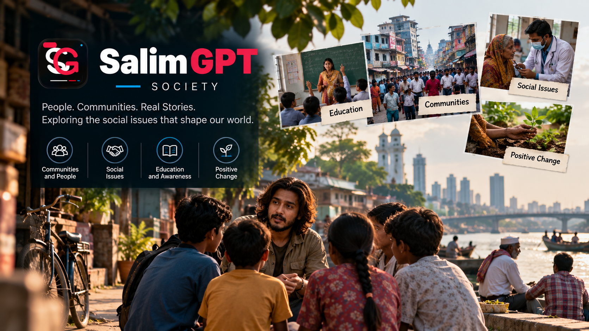

Communities & Everyday Life
How people live, cooperate, adapt, organize and experience life within families, neighborhoods, workplaces and communities.
DOCUMENTARY TOPIC
Explore how people live together, build communities, form institutions, create cultures, respond to change and experience the social systems that shape everyday life.
Society is a broad discovery gateway, not a fixed boundary. A SalimGPT documentary may examine an entire social system or focus deeply on one community, profession, practice, institution, neighborhood, relationship or highly specific human issue.
UNDERSTANDING SOCIAL LIFE
Social documentary research can examine entire populations and institutions or concentrate on one small community, behavior, practice, relationship or overlooked human experience. The areas below are examples rather than a complete classification.
How people live, cooperate, adapt, organize and experience life within families, neighborhoods, workplaces and communities.
Traditions, customs, language, values, rituals, identity and practices that influence social life.
Education, work, family structures, public systems, organizations and institutions that shape social experience.
Access, exclusion, economic conditions, social mobility and differences in how people experience institutions and opportunities.
Migration, urbanization, technology, demographic shifts and other forces that alter communities and social relationships.
A small local practice, one profession, a single neighborhood or a narrowly defined social question can become the basis of a full documentary.
NOT LIMITED TO THESE AREAS
These examples help organize discovery, but they do not determine the limits of SalimGPT's society documentaries. A subject may be global or local, widespread or highly specific, established or emerging, and it may overlap with history, technology, science, culture, economics or other fields.

PEOPLE, CONTEXT & EVIDENCE
Documentary research on society may draw from academic research, official records, demographic information, historical material, reporting, interviews, testimony and other relevant evidence.
Social experiences can differ across communities, locations, periods and populations. SalimGPT therefore aims to distinguish documented evidence from interpretation, individual experience and broader claims about society.
MULTILINGUAL DISCOVERY
Documentary availability and localized presentation may differ between SalimGPT language editions.
সমাজ, মানুষ ও সামাজিক জীবনের বিভিন্ন বিষয় নিয়ে বাংলা ডকুমেন্টারি দেখুন।
Explore documentary subjects about society and human communities in English.
समाज, समुदाय और सामाजिक जीवन से जुड़े विषयों पर हिन्दी डॉक्यूमेंट्री देखें।